Вышка — это как?
Дневник является хранилищем воспоминаний о самых ярких событиях за период учебы в Вышке. Автор - студент группы Б18ДЗ05 Воронина Аня профиль дизайн и программирование. Надеюсь, вам будет интересно вместе со мной пройтись по самым захватывающим моментам этой осени и узнать, а чё ваще происходит
Желаю приятного чтения с:
Глава 1
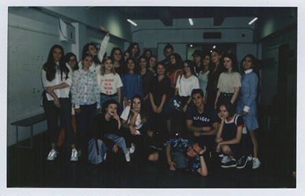
Первые дни в Вышке
Первые пару дней в школе дизайна прошли очень круто,
потому что сразу заходя в здание чувствуется творческая
атмосфера (особенно понравились черные батареи).
Знакомство с одногруппниками, преподавателями и
ментором было мега ламповым.
Глава 2
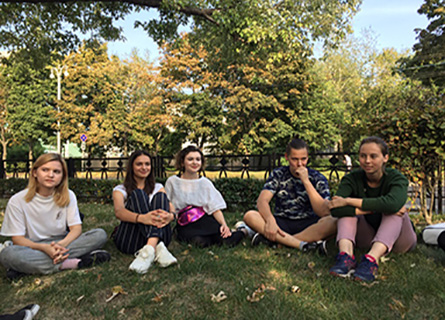
Знакомство с куратором и группой
Отдельно стоит выделить знакомство с ребятами и Захаром,
потому что это было очень забавно, когда Катя предложила
игру на запоминание имен. Неожиданный
мозговой штурм,
и да я Аня и я люблю халву
Глава 3
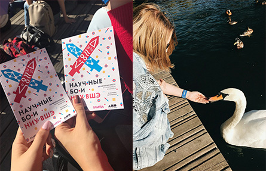
День Вышки
Пожалуй, один из самых насыщенных эмоциями день. Пока все мои одногруппники пошли тусить вместе с куратором, я отправилась на мероприятие для БЖД.
Если не считать палящего солнца и расфокуса без очков, то лекция прошла довольно интересно. Лично мне больше всего запомнился спикер, выступавший с работой по “Рику и Морти”. Лектором была выпускница Вышки, в своей работе она рассматривала социальные вопросы, которые поднимаются в мультсериале. Если задуматься, то мне кажется, большинство людей при просмотре не ищут глубоко подтекста за незамысловатой мульт формой.
Общая атмосфера в ПГ в этот день была крайне дружелюбной, когда видишь вокруг столько студентов Вышки, сразу чувствуешь себя частью большой семьи. А еще мы с подругами в этот день покормили лебедей, правда в какой-то момент что-то пошло не так и лебедь сделал кусь за руку
Глава 4
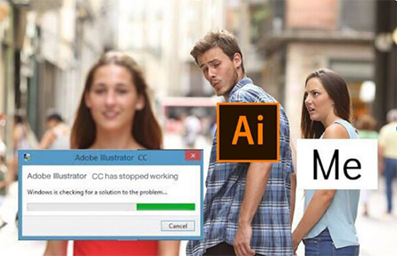
Начало работы над проектом
Первые пары и первые затупы)0) Начинать нужно с малого, ну как минимум хотя бы включить аймак.
После дня Вышки мы начали работать над проектом под руководством Жени. Первое что мы сделали - придумали тему и концепцию для нашего проекта. После того, как мы утвердили темы, мы начали развивать их, составив сначала несколько мудбордов. Параллельно с этим у нас были пары со Светой, на которых мы изучаем интерфейс иллюстратора.
Глава 5
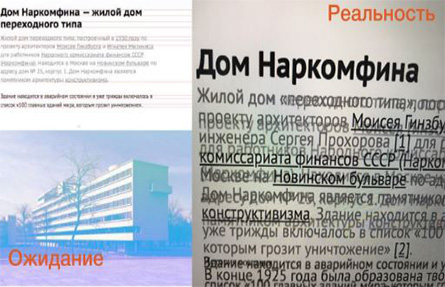
Кодинг
Также мы приступили к изучению CSS и HTML. Навыки применяли при редактировании статьи про дом Наркомфина на парах с Женей. Познакомились с Githab-ом, настроили Atom и дружно отправились верстать

Глава 6
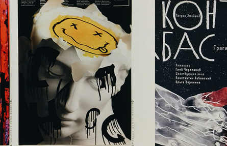
Золотая пчела
Одно из самых крутых и запоминающихся событий не только за осень, но и в принципе за пару лет. Отличный опыт и возможность посмотреть разносторонне на дизайн. В конце дня, а это около 8 часов вечера, уже дурно становилось от количества дизайна вокруг на квадратный сантиметр. В такие моменты ты чувствуешь себя частью одной большой семьи - творческого коммьюнити
Плакат сильнее страсти, больше, чем любовь
Глава 7
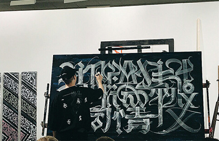
Вкусности-искусности
Плавно от биеннале хочу переключиться на еще одно событие осени, связанное с искусством.
Попала на выставку Покраса Лампаса.
Никогда не думала, что увижу его в живую, да еще и так случайно
Глава 8
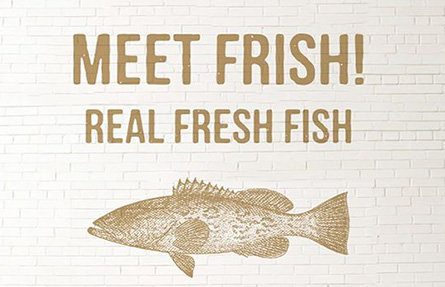
Жизнь общажная
Первый приход дежурок и коменды тоже очень яркое событие в жизни абитуры.
По закону подлости соседки завели рыбок в комнате за пару дней до прихода коменд
Глава 9
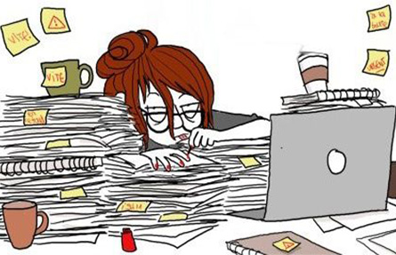
Неделя перед сессией
Посвящение в истинных дизайнеров так сказать.
Неделя была не из простых, история, английский, много работы над креативным проектированием, но это того стоило

Древние греки верили, что после смерти их ждет дискотека
Глава 10
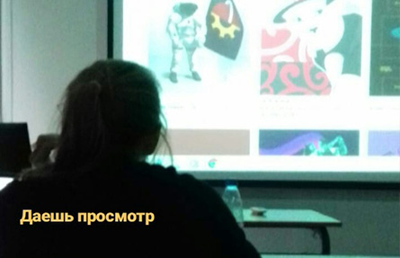
Просмотр
Очень смешанные чувства. Буквально год назад ты заходил на студ портфолио и офигивал от крутоты работ учащихся, а теперь сам оказываешься на их месте. Даже странно было после заливки работы на сайт, жил с проектом бок о бок 2 месяца, а теперь все, работа на данном этапе доделана

Если ты дочитал до конца, то ты большой молодец с:
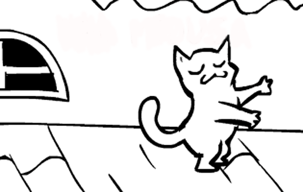